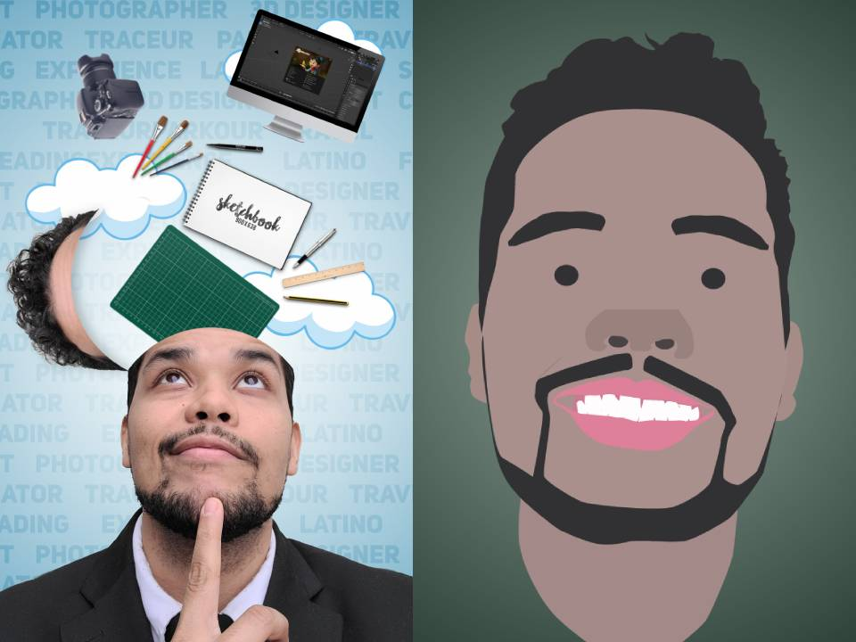

Hello visitors, my name is Robert Morales. I created this site to display my work throughout my first year in art school. I am pursing my degree in Computer Graphics and Animation. As you scroll down you will get to see some of my most recent work this year. I hope you enjoy!
My first objective this semester was to create a portrait using Adobe Illustrator. Before I started the portrait project, I had an idea about the type of portrait I wanted to create but I had no prior experience with the program. Once I became familiar with the interface, I noticed many of the tools were like Photoshop which was a relief. I continued work on the portrait, choosing a selfie I had taken at a week or so prior. I chose this selfie because it represents me. I am always thinking. Whether it is about school, family or life, my mind seems to always race.
Leading up to the audio project, we learned how to use Audacity in class. I had a chance to use this program prior, so I was able to pick up the new tools quickly. I really enjoyed this project because it allowed recreate a location using only sounds. When I was young, I remember watching movies and trying to listen to all the sounds they used to create complex scenes. The sound selection was everything. For my project, I used sounds from the NYC train, sounds of kids playing, trees rustling and more. It was interesting, gaining an understanding of how important sound is and the role it plays on seeing the bigger picture.
For the animation project, I instructed to create an animation using basic shapes and sounds. To do this, I was to use Adobe After Effects. Once I learned the proper importing, exporting and keyframing techniques to create my project, I began to work. Formulating an idea was difficult at first. I spent days at work wondering what I would create. Then I remembered to think of something that I could relate to. My animation was created as a reminder to slow down. Although things seem chaotic now, it will all work out in the soon. Just stay calm and smile.
My next project, the idea was to develop a choose-your-own-adventure style website. Being a fan of mystery books, I chose to create a simple adventure of a hungry thief. I used skills like embedding photos and websites into the code. I used linking to help you navigate from one part of the adventure to the next. This project was fun and challenged my creativity.
My inspiration for this project came from an article involving the new James Webb telescope. With our new advances in science were closer to the starts than we have ever been. To create this animation, I used P5.Js. This project was interesting because I could only use code which is typically for programming to create something visual. The biggest challenge I faced was creating the mouse icon. I did not want to use your normal pointer, so I found a Png of an alien ship and replaced it. Now the alien will follow you wherever you go.
Thank You all for taking your time to look through my portfilio!
See you next time.